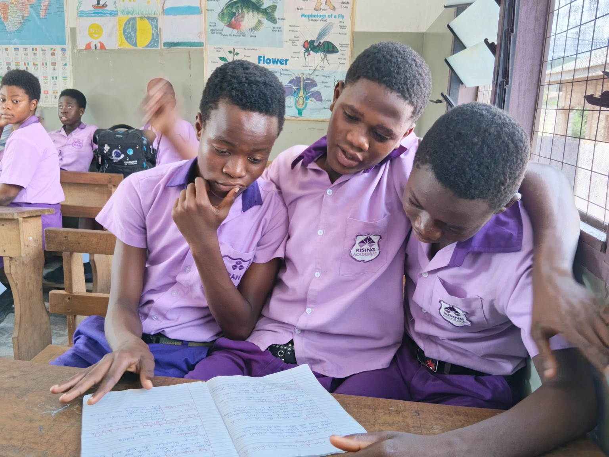

Who we are
About Rising Academy Network
A school community focused on learning, growth and opportunity.

Our school
Rising Academy Network serves learners in Kindergarten, Primary and Junior High School in Ayibetown, Greater Accra Region, Ghana.
Our motto
Building Minds, Shaping Futures.
Our commitment
To encourage learners to participate, think critically, work together and keep developing their abilities.
Our vision
To nurture confident, capable learners who are prepared to contribute positively to their communities.
Our mission
To support learning through guidance, purposeful teaching and a caring school community.
Our values
Respect, responsibility, teamwork, curiosity and continuous improvement.